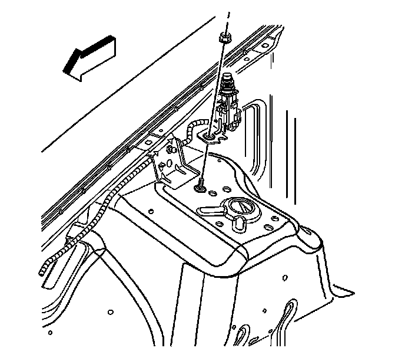

Hood Sensor/Switch (For Alarm): Service and Repair
Hood Ajar Indicator Lamp Switch Replacement
Removal Procedure

1. Open the hood.
2. Disconnect the electrical connector from the hood ajar switch.
3. Remove the fastener from the hood ajar switch.
4. Remove the hood ajar switch from the vehicle.
Installation Procedure
1. Install the hood ajar switch to the vehicle.
Notice: Refer to Fastener Notice (Fastener Notice) .
2. Install the fastener to secure the hood ajar switch.
Tighten the fastener to 9 N.m (80 lb in).
3. Connect the electrical connector to the hood ajar switch.
4. Close the hood.